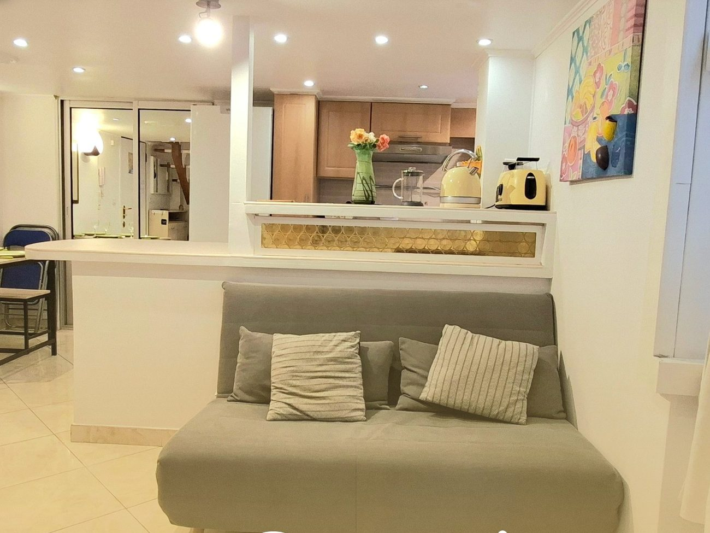
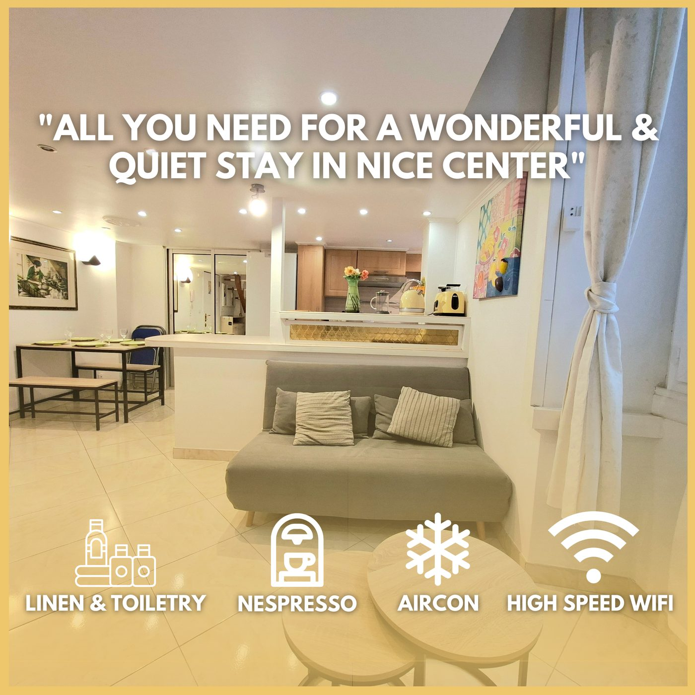
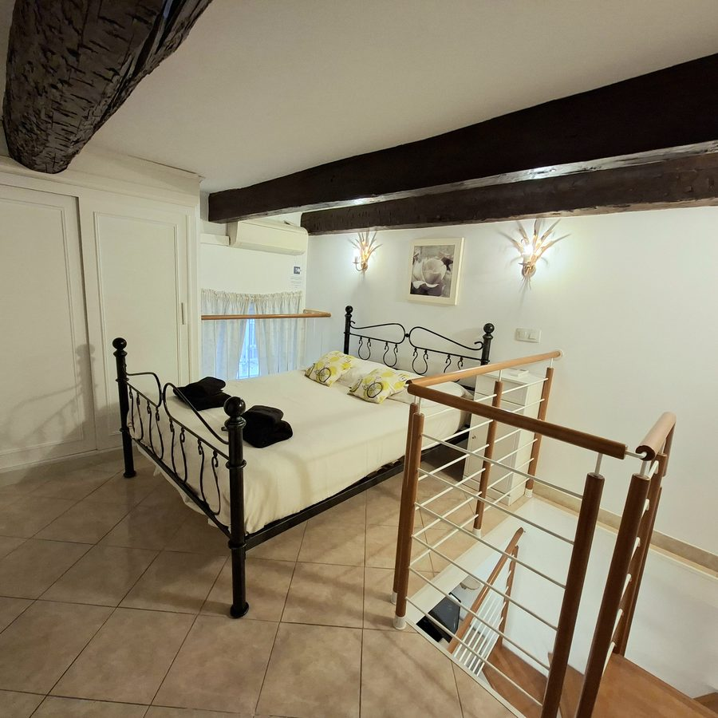
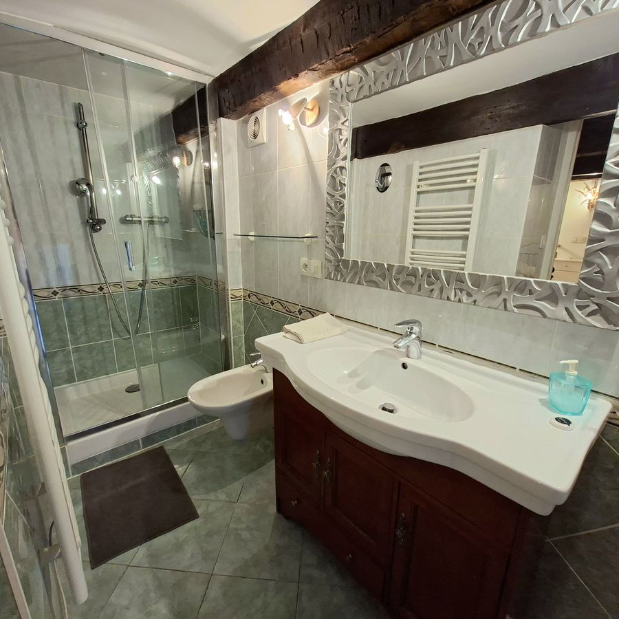
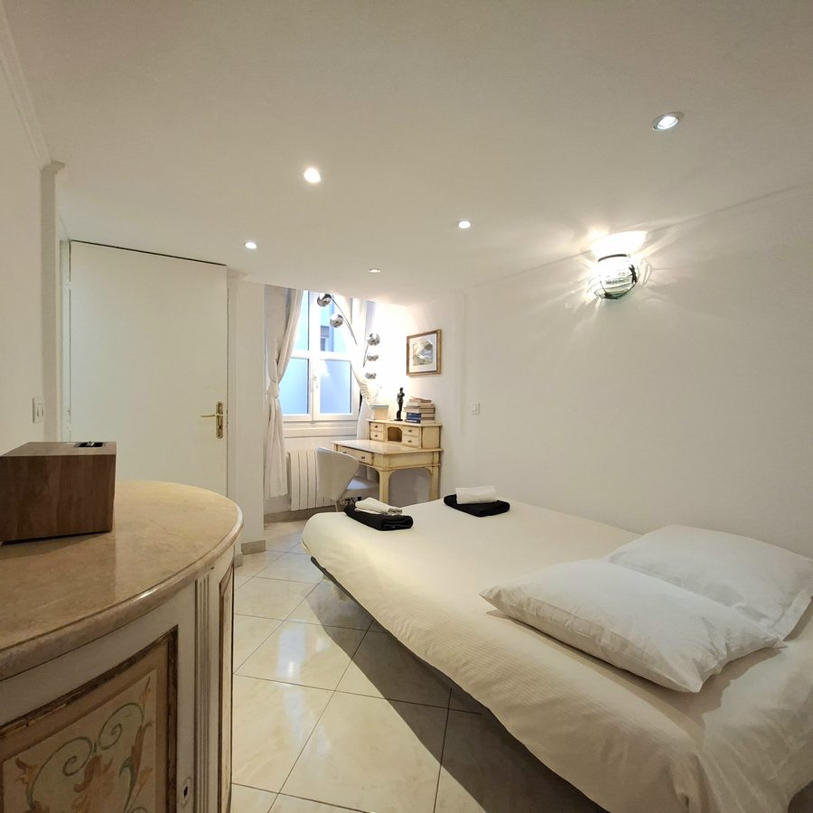

Port de Nice · Côte d'Azur
Nice Port Duplex
Location meublée touristique — duplex idéalement situé sur le port historique de Nice
Voir les disponibilitésPort de Nice · Côte d'Azur
Location meublée touristique — duplex idéalement situé sur le port historique de Nice
Voir les disponibilitésLe logement
L'immeuble date du XVIIIe siècle et le duplex en a gardé les proportions : des plafonds hauts, des murs épais qui tiennent la fraîcheur en été, et des fenêtres qui donnent sur la cour intérieure plutôt que sur la rue. On y dort dans un silence rare à cette adresse.
Les 54 m² se répartissent sur deux niveaux. Le séjour et la cuisine occupent le premier ; un escalier mène à l'étage, où se trouvent un lit double et un lit simple. Deux canapés-lits de 140 × 190 cm complètent les couchages, dans le séjour et dans la chambre-bureau — de quoi accueillir six personnes sans que personne ne dorme mal.
C'est un appartement pour ceux qui veulent vivre le quartier plutôt que le regarder : le marché le matin, les terrasses du port le soir, la Promenade des Anglais au bout de la rue.






Équipements
Le duplex est équipé pour des séjours de quelques nuits comme de plusieurs semaines.
Emplacement
L'adresse est au cœur du quartier du port, entre le Vieux Nice et le Mont Boron. Tout se fait à pied.
Réservation
Les mêmes dates, le même logement, sans la commission des plateformes.
Questions fréquentes
Jusqu'à six voyageurs. L'étage dispose d'un lit double et d'un lit simple, et deux canapés-lits de 140 × 190 cm se trouvent dans le séjour et dans la chambre-bureau.
Non. Le duplex donne sur la cour intérieure de l'immeuble, et non sur la rue. C'est l'un de ses principaux atouts dans un quartier aussi vivant.
Le parking Lympia se trouve juste en face de l'immeuble. Il est payant et ne nécessite pas de réservation préalable.
Oui. Le WiFi est en fibre et la chambre-bureau dispose d'un coin de travail, ce qui convient aux séjours longs comme au télétravail.
Parce que les commissions des plateformes ne s'appliquent pas. À dates identiques, le tarif en direct est le plus avantageux, et vous échangez directement avec l'hôte avant et pendant le séjour.
Nous trouver